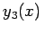
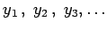
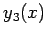
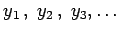

Inhalt Index DeskTop Bronstein

 Differentialgleichungen Gewöhnliche Differentialgleichungen Differentialgleichungen 1. Ordnung Genäherte Integration von Differentialgleichungen 1. Ordnung
Differentialgleichungen Gewöhnliche Differentialgleichungen Differentialgleichungen 1. Ordnung Genäherte Integration von Differentialgleichungen 1. Ordnung


Die Integration der Differentialgleichung
Wird in die rechte Seite dieser Gleichung (9.20b) anstelle von y eine angemessen ausgewählte Funktion y1(x) eingesetzt, dann ergibt sich eine neue Funktion  , die sich von y1(x) unterscheidet, wenn nicht y1(x) bereits eine Lösung von (9.20a) ist. Nach Einsetzen von y2(x) in die rechte Seite von (9.20b) anstelle von y erhält man eine Funktion . Die durch Fortsetzen des Verfahrens gewonnene Funktionenfolge  konvergiert gegen die gesuchte Lösung in einem gewissen, den Punkt x0 enthaltenden Intervall, wenn die Bedingungen des Existenzsatzes erfüllt sind. Diese PICARDsche Methode der sukzessiven (schrittweisen) Approximation ist ein Iterationsverfahren.
, die sich von y1(x) unterscheidet, wenn nicht y1(x) bereits eine Lösung von (9.20a) ist. Nach Einsetzen von y2(x) in die rechte Seite von (9.20b) anstelle von y erhält man eine Funktion . Die durch Fortsetzen des Verfahrens gewonnene Funktionenfolge  konvergiert gegen die gesuchte Lösung in einem gewissen, den Punkt x0 enthaltenden Intervall, wenn die Bedingungen des Existenzsatzes erfüllt sind. Diese PICARDsche Methode der sukzessiven (schrittweisen) Approximation ist ein Iterationsverfahren.
| Beispiel |
|
Es ist die Differentialgleichung y'=ex-y2 für die Anfangsbedingung y0 = 0 für x0 zu lösen. Umschreibung in die Integralform und Anwendung der sukzessiven Approximation, beginnend mit y0 = 0 liefert: |